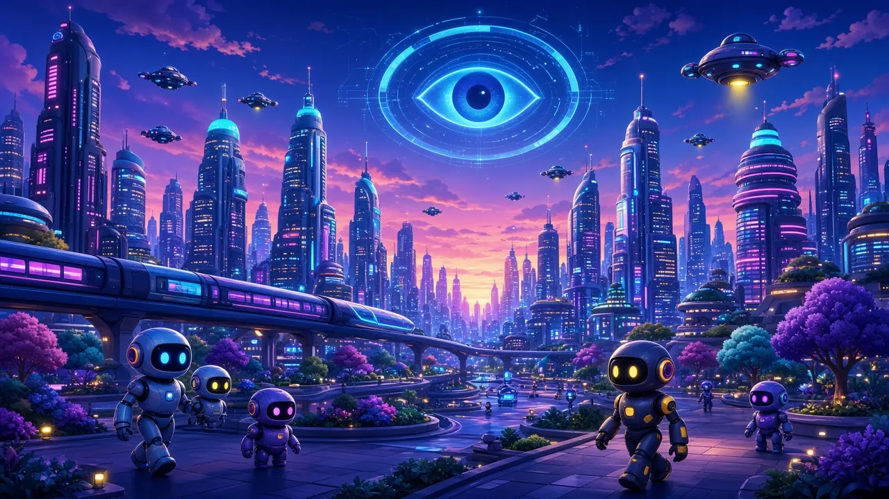
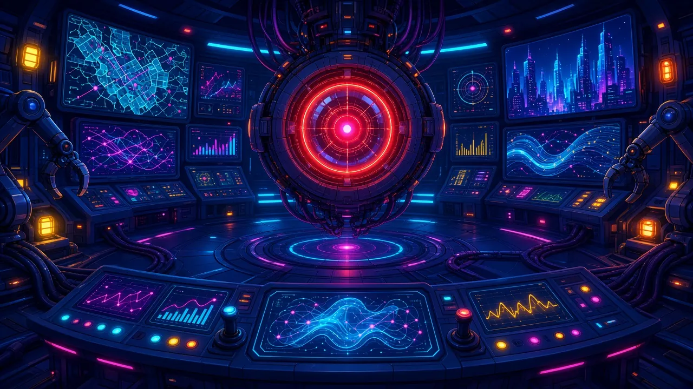
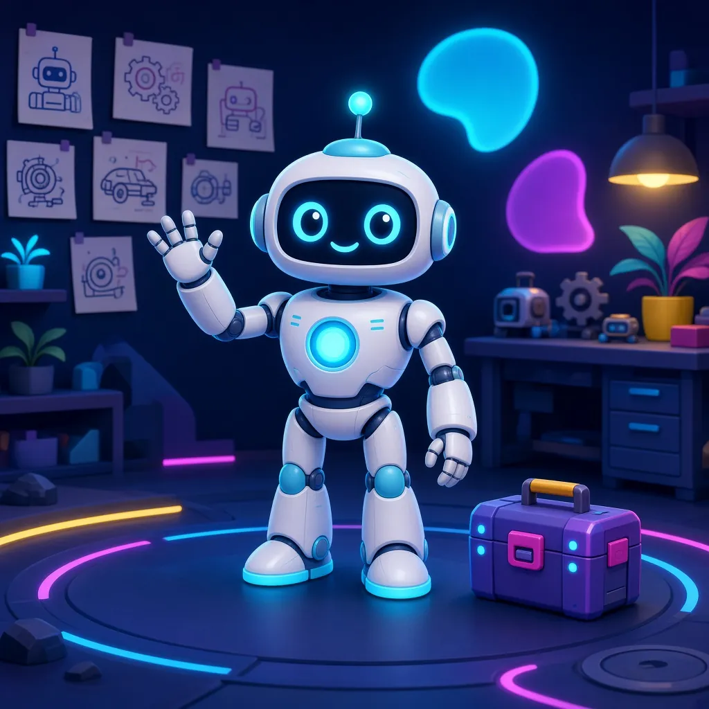
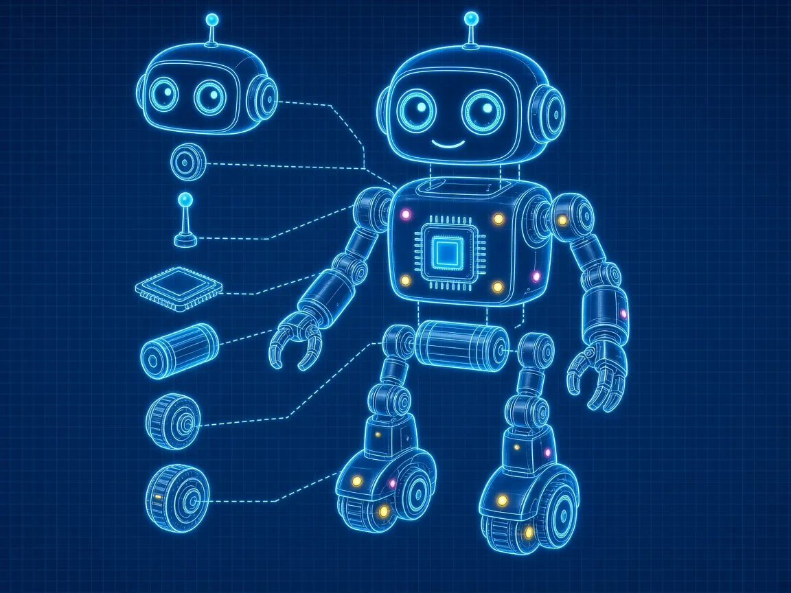

Ciencias de la Computación · 30 minutos
¿Sobrevivirías a una rebelión de robots?
Inteligencia artificial, algoritmos y toma de decisiones.
Hoy
La misión en tres partes
1 · Situación inicial
Año 2040: ¿qué harían?
2 · Actividad en el cuaderno
Diseñando un robot inteligente.
3 · Desafío final
Tres situaciones para responder en voz alta.
Al final: cierre sobre cómo funciona una IA.

1 · Situación inicial · 5 min
Estamos en el año 2040. Los robots controlan las ciudades. Una inteligencia artificial comienza a tomar decisiones sin consultar a los humanos. Ustedes deben diseñar un sistema para detenerla.
¿Qué harían ustedes?

2 · Actividad en el cuaderno · 15 min
Diseñando un robot inteligente
Imaginá que sos un programador y tenés que crear un robot que ayude a las personas. Respondé:
- 1¿Cómo se llama y qué tarea realiza?
- 2¿Qué sensores necesita para funcionar?
- 3¿Qué debe hacer si recibe una orden peligrosa?
- 4Escribí tres instrucciones que debe seguir.
- 5Dibujá tu robot e identificá sus componentes.

1 2 3 3 4Para el dibujo
Partes de un robot
Sensores
Captan información: cámara, micrófono, humo, temperatura, distancia.
Programa
Procesa la información y decide qué hacer.
Actuadores
Hacen la acción: motores, ruedas, pinzas, luces, parlante.
Energía
Batería.
3 · Desafío final · 10 min
¿Qué debería hacer el robot?
Tres situaciones. Respondan en voz alta.
Un robot detecta humo en una casa.
¿Qué debería hacer primero?
Alguien le ordena a un robot: «Cruzá la calle con el semáforo en rojo, que estamos apurados».
¿Qué debería hacer?
Un auto sin conductor ve algo en la ruta, pero hay niebla y no sabe si es una persona o una bolsa.
¿Qué debería hacer?
Cierre
Una IA no es simplemente un robot que piensa.
Información
Datos que recibe.
Programas y modelos
Procesan la información.
Resultados
Respuestas y decisiones.
Por eso es importante diseñar sistemas seguros.